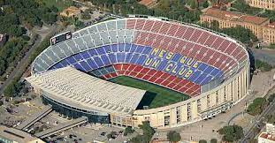
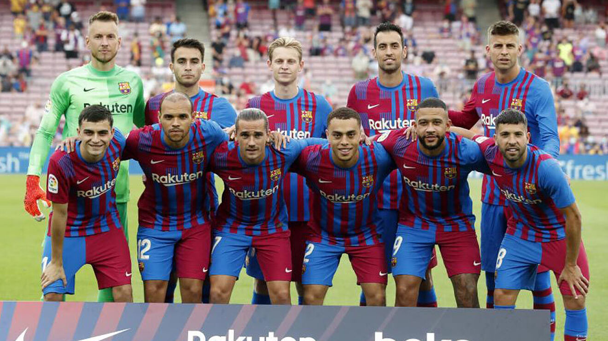

Barcelona FC

Football Club Barcelona commonly referred to as Barcelona and colloquially known as Barça is a professional football club based in Barcelona, Spain, that competes in La Liga, the top flight of Spanish football. Founded in 1899 by a group of Swiss, Spanish, German and English footballers led by Joan Gamper, the club has become a symbol of Catalan culture and Catalanism, hence the motto "Més que un club. Unlike many other football clubs, the supporters own and operate Barcelona. It is the fourth-most valuable sports team in the world, worth $4.76 billion, and the world's richest football club in terms of revenue, with an annual turnover of €715.1 million. The official Barcelona anthem is the Cant del Barça written by Jaume Picas and Josep Maria Espinàs.Barcelona traditionally play in dark shades of blue and red stripes, hence nicknamed Blaugrana. Domestically, Barcelona has won a record 75 trophies: 26 La Liga, 31 Copa del Rey, thirteen Supercopa de España, three Copa Eva Duarte, and two Copa de la Liga titles, as well as being the record holder for the latter four competitions. In international club football, the club has won twenty European and worldwide titles: five UEFA Champions League titles, a record four UEFA Cup Winners' Cups, a joint record five UEFA Super Cups, a record three Inter-Cities Fairs Cups, and three FIFA Club World Cups. Barcelona was ranked first in the International Federation of Football History & Statistics Club World Ranking for 1997, 2009, 2011, 2012 and 2015, and occupies the seventh position on the UEFA club rankings as of 2021. The club has a long-standing rivalry with Real Madrid, and matches between the two teams are referred to as El Clásico. Barcelona is one of the most widely supported teams in the world, and the club has one of the largest social media following in the world among sports teams. Barcelona players have won a record twelve Ballon d'Or awards, with recipients including Johan Cruyff, as well as a record seven FIFA World Player of the Year awards, with winners including Romário, Ronaldo, Rivaldo and Ronaldinho. In 2010, three players who came through the club's youth academy (Lionel Messi, Andrés Iniesta and Xavi) were chosen as the three best players in the world in the FIFA Ballon d'Or awards, an unprecedented feat for players from the same football academy. Additionally, players representing the club have won a record eight European Golden Shoe awards. Barcelona is one of three founding members of the Primera División that have never been relegated from the top division since its inception in 1929, along with Athletic Bilbao and Real Madrid. In 2009, Barcelona became the first Spanish club to win the continental treble consisting of La Liga, Copa del Rey, and the UEFA Champions League, and also became the first Spanish football club to win six out of six competitions in a single year, by also winning the Spanish Super Cup, UEFA Super Cup, and FIFA Club World Cup. In 2011, the club became European champions again, winning five trophies. This Barcelona team, which won fourteen trophies in just four years under Pep Guardiola, is considered by some in the sport to be the greatest team of all time. By winning their fifth Champions League trophy in 2015, Barcelona became the first European football club in history to achieve the continental treble twice.
